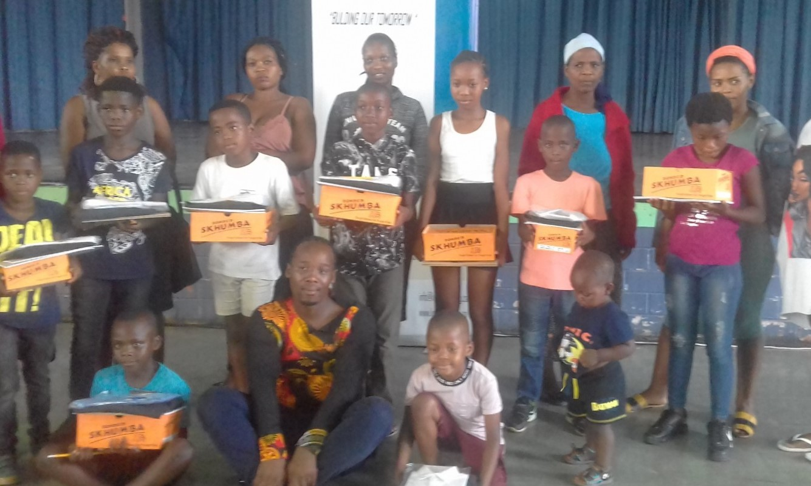
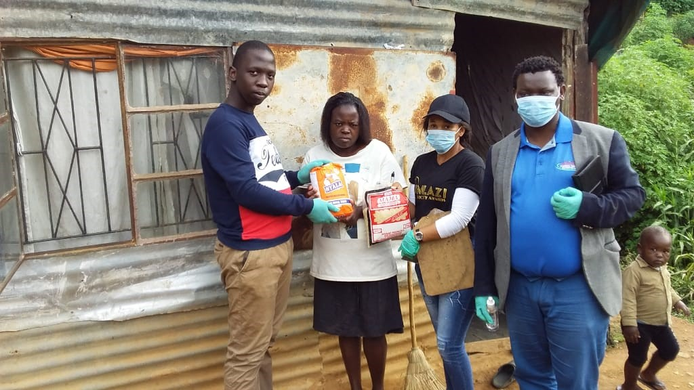
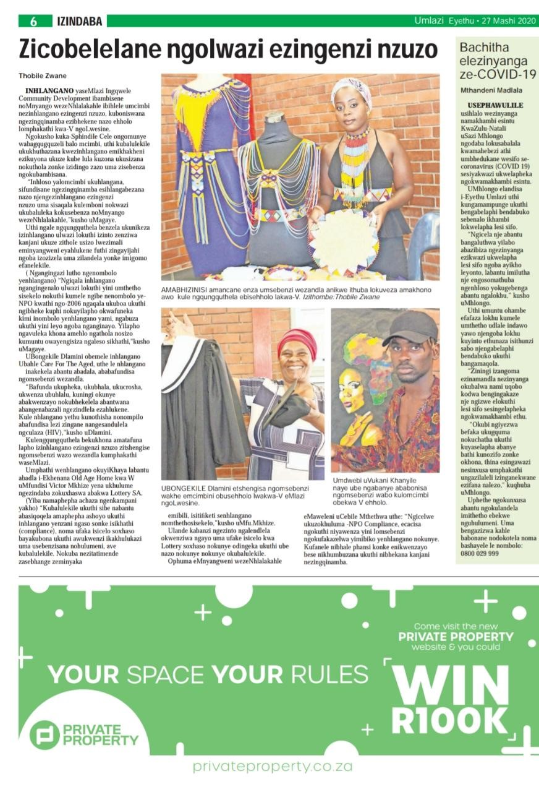

BLOGS
Love Education Day
Usually, on the 12th of February every year, Ingqwele celebrate its occasion that is called ‘Love Education Day’ where students who come from indigence are given calculators, school uniforms and stationeries. On such occasions, students are not only advised to pursue careers that only require Mathematics and Physical Sciences, but also those that are well in-synch with their personalities. It is unwise to coerce a person into selecting a career that s/he does not even like. That is like asking a person who has no fingers to play a guitar. In so doing, we are of view that we are contributing into making a better South Africa with educated bureaucrats. Students who passed their matric are given registration fees as a symbol of showing appreciation and thanking them for the way they performed during their final examinations. This helps in reducing the number of matriculates who passed from staying at home due to being unable to pay registration fees.
IMAGES OF OTHER PROGRAMMES OUR ORGANIZATION OFFERS/PARTAKES
1 / 4
Training by the youth for CV writing and job readiness and the reward of certificates
2 / 4

We organised a programme to donate to the children who are orphans with the believe that education change the living conditions of the poor masses.
3 / 4

The workshop was implemented in assisting youth in leadership skills so that they could empower themselves and decrease job seeker and improve job makers in our community.
4 / 4

Donation that was made by Ingqwele community development to the family from disadvantage background during the pandemic of COVID-19.
❮
❯

This above article shows the workshop that was called Youth NPO Capacity Building Workshop, organised by Ingqwele community development organisation where by the different sectors of organisations sure casing their work and services that they rendering in different communities. We invited different stakeholders to link their NPO with their relevant department when they are looking for funding.
Our deepest fear is not that we are inadequate. Our deepest fear is that we are powerful beyond measure. It is our light, not our darkness that most frightens us. We ask ourselves, who am I to be brilliant, gorgeous, talented, and fabulous? Actually, who are we not to be?’’- Marianne Williamson